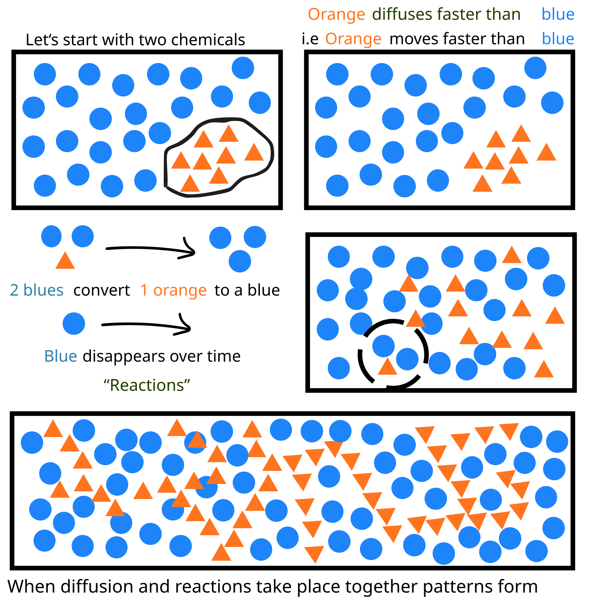

Background
A simple but powerful question
In 1952, Alan Turing asked a deceptively simple question: how do living things know where to place spots, stripes, and shapes? He introduced the idea of morphogenesis — the process by which patterns and forms develop in living systems.
Instead of assuming a detailed biological blueprint, Turing showed that order can emerge naturally from simple physical and chemical rules. The patterns are not pre-formed in advance — they self-organize.
The Mechanism
Reaction-Diffusion: two chemicals, one pattern
One such rule is called reaction-diffusion. In this process, chemicals react with one another as they spread through space at different speeds. A small imbalance can grow while nearby regions are suppressed, leading to stable patterns such as spots, stripes, or waves.

Fig. 1 — The two-chemical system. Blue (inhibitor) diffuses more slowly; Orange (activator) diffuses faster. Their interaction and relative diffusion rates give rise to stable spatial patterns.
Activator (Orange)
Diffuses faster through space. Acts as the driving chemical — promotes its own production and that of the inhibitor.
Inhibitor (Blue)
Diffuses more slowly. 2 blue molecules convert 1 orange to blue. Blue also disappears over time, keeping the system dynamic.
When diffusion and reactions take place together, patterns form. The faster-diffusing activator creates local hotspots, while the slower inhibitor suppresses activity in surrounding regions — producing the characteristic Turing instability.
Going Further
Diffusiophoresis: patterns driving more patterns
Beyond chemical reactions, additional patterning can arise through diffusiophoresis. In many systems, reaction-diffusion first creates chemical gradients — smooth changes in concentration from one place to another — the same gradients that give rise to Turing patterns.
Diffusiophoresis then acts on top of these gradients, causing particles to move in response to them. Even without particles reacting directly, their motion is guided by these reaction-generated concentration differences, leading to enhanced or secondary patterns.
Key Insight
Together, these ideas show how simple local interactions — combined with motion and diffusion — can generate the rich patterns we see in nature.
Why It Matters
From theory to the natural world
Turing's framework has since been observed across biology, chemistry, and physics — from the coat patterns of leopards and zebrafish stripes, to the formation of sand dunes, coral reefs, and even features at the nanoscale. The same mathematics that Turing wrote in 1952 continues to inform cutting-edge research in pattern formation today.
In our group, we explore how these principles extend to colloidal and electrochemical systems — where diffusiophoresis creates new opportunities for directed assembly and transport at small scales.